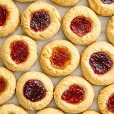

Perfect Thumbprint Cookies

Perfect Thumbprint Cookies
Thumbprint cookies are the perfect holiday treat. They have this wonderful melt in your mouth texture that your family won't be able to get enough of. Enjoy these delicious shortbread jammie thumbprint cookies!
Ingredients
Cookies:
- 1/3 cup unsifted powdered sugar
- 1 stick unsalted butter, at room temperature
- 1 Large egg yolk
- 1 teaspoon vanilla extract
- 1/4 teaspoon fine salt
- 1/8 teaspoon almond extract
- 1 1/4 cups all-purpose flour
- 1/3 cup white sugar, or as needed
- 1/2 cup fruit jam, divided
Icing:
- 1 cup powdered sugar
- 1 tablespoon milk, or as needed
Steps
- Preheat the oven to 325 degrees F (165 degrees C). Line a baking sheet with a silicone mat.
- Mix together powdered sugar and butter in a large bowl with a rubber spatula until creamy. Add egg yolk, vanilla, salt, and almond extract; mix well. Blend in flour until just combined.
- Use a sorbet scoop to portion dough into 1/2-ounce (about 1 tablespoon) balls. Roll each ball in a plate of white sugar to coat; roll again between your palms. Place several inches apart on the prepared baking sheet. Flatten balls lightly with your fingers.
- For jammier cookies, skip to Step 7. For shortbread-type cookies, poke a well into each ball using a finger or the end of a thick wooden spoon dusted with powdered sugar. Fill wells with fruit jam. Tap the baking sheet against the counter to let jam settle.
- Bake in the preheated oven until the tops are barely blonde and bottoms are slightly golden, about 15 minutes. Let cool completely on a wire rack before icing.
- Make icing: Place powdered sugar in a small bowl. Add milk, a little at a time, until icing reaches a consistency that will hold its shape when piped. Pipe over cookies in a zigzag pattern. Let sit for 15 minutes before serving.
- Press thumb into each ball to make a large, shallow indentation. Spoon in jam. Tap the baking sheet against the counter to let jam settle.
- Bake in the preheated oven until light golden brown, about 15 minutes. Let cookies rest on the baking sheet for 5 minutes before transferring to a wire rack to cool completely. Dust with powdered sugar.
- Enjoy with a glass of cold milk!